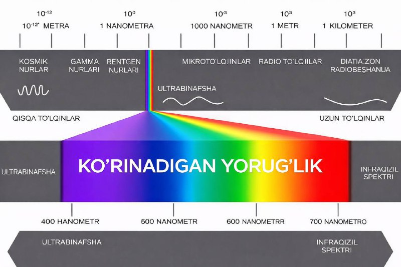

Кўзимиз кўраётган дунё - бутун олам эмас.

Инсон кўзи электромагнит тўлқинларининг жуда кичик қисмигина — 400 дан 700 нанометргача бўлган диапазонни кўра олади. Шу кичик бўлакни биз “кўринадиган ёруғлик” деб атаймиз.
Лекин ҳақиқий олам бундан анча кенг.
Бизнинг кўзимиз кўрмайдиган нарсалар бор:
- ультрабинафша нурлар
- инфрақизил нурлар
- микротўлқинлар
- радиотўлқинлар
- ҳамда космик нурлар
Уларнинг ҳаммаси мавжуд.
Фақат биз кўра олмаймиз.
Энг қизиғи шундаки, инсон кўпинча ўз хулосаларини айнан кўрган нарсасига асослаб чиқаради.
“Кўрдим — демак шу ҳақиқат.”
“Кўрмадим — демак йўқ.”
Лекин илм бизга бошқача нарсани ўргатади.
Кўзимиз илғай олгани — бу оламнинг жуда кичик қисми.
Худди катта денгиздан бир томчи каби.
Шунинг учун ақлли инсон доимо шундай деб ўйлайди:
Мен кўрганим - бутун ҳақиқат эмас.
Мен билмаган нарса - ҳали жуда кўп.
Илм ҳам шу ердан бошланади.
Камтарлик ҳам шу ердан бошланади.
Чунки олам биз кўрганимиздан анча катта.
Ҳақиқат эса биз тушунганимиздан анча чуқур.
P/s: асосий нарсани билан кўриб бўлмайди, қалб кўрувчидир. Иймони комил бўлиши учун эса албатта кўриши шарт бўлган инсонлар ўта заиф.